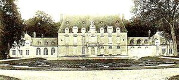
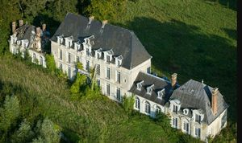
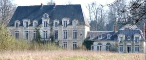
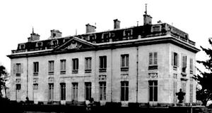
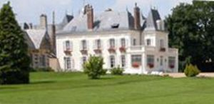
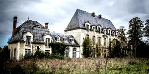

Recensement Jean-Claude Truffet
| Département | 27 — Eure |
| Canton | Ecos |
| Commune | Cahaignes |
| Type d'édifice | Château |
| Période d'origine | XII |
| Coordonnées GPS | 49° 12' 33" Nord, 1° 36' 03" Est Roquencourt grav-5 GPS : 49° 12' 33" Nord, 1° 36' 03" Est |






Deux châteaux dans cet article, Cahaignes et Roquencourt. CAHAIGNES, dit aussi des singes, a été construit au XVIIe siècle. Le château des Singes porte ce nom suite aux «singeries » formant les décors sur les boiseries, mais il fut aussi appelé le « château la Folie » en allusion aux décorations, de style rococo, en vogue au XVIIIe siècle, est une ancienne maison de repos en ruine, abandonnée par son ancien propriétaire. Longtemps laissé à l'abandon, fin 2014, a trouvé un nouvel acquéreur qui a décidé de le remettre en état. cest pourtant seulement à partir de la fin du XIXe siècle que les premiers propriétaires furent répertoriés, ce jusquà la moitié du XXe siècle. En 1897, il a appartenu à la comtesse de Bois de Nemetz, puis au comte et la comtesse de Cornulier. En 1875, le comte de Bois de Nemetz, unique représentant du nom, résidait au château de Cahaignes, près les Andelys et au château de Montmiry-le-Château, par Moissey, dans le département du Jura. Henri-Marie-Edmond-Toussaint, né le 18/12/1849 à Caen, comte De Cornulier, fait la campagne de 1870-1871 dans la garde nationale mobile du Calvados. Il fut nommé sous-lieutenant dans la cavalerie de réserve le 25/05/1875. Il épouse à Paris, le 27/10/1877, Jeanne Daniel de Boisdenemets, fille d'Armand-Léopold Daniel, comte de Boisdenemets, et de Sophie-Caroline de Metz. appartiendra en 1899 au comte Henri de Cornulier, propriétaire-éleveur à la Ville-l'Evèque. Puis il ira à la famille Les Thilliers-en-Vexin. En 1931, il ira dans les mains du comte de Cornulier. Et en 1935, il appartiendra à la comtesse de Cussy.
CAHAIGNES-SINGES, son avant dernier propriétaire abandonnera en état son château, ruiné et en raison de son age avancé. C'est à la fin de décembre 2014 que le château des Singes fut racheté, a été classé aux M.H. en 1953. Son dernier propriétaire Ernest Hubert Jean Picot s'est trouvé dans l'impossibilité définitive de l'entretenir à la suite de son départ en maison de repos. Il aurait trouvé un acquéreur fin 2014 , est classé aux M.H. depuis 1953. ROQUENCOURT, le domaine devient ensuite la propriété de grandes familles comme les Thumery en 1475, les Blondel en 1570, les Sanguin en 1584, les Chantemelle en 1734 et enfin les La Faye en 1771. Pierre Julien de La Faye, conseiller du roi, et dernier seigneur de Rocquencourt, vend le domaine à Monsieur, frère du roi, comte de Provence, tandis que Louis XVI acquiert la seigneurie.Cette grande demeure classique est achetée en 1824 par la duchesse de Corrigliano, nièce du roi Murat. Elle la vend en 1829 au banquier Fould. Sa petite-fille, Mme Furtado-Heine, fait aménager un parc où elle reçoit le tout-Paris. À son décès, la propriété échoit aux Murat, et Cécile Ney, princesse Murat, en est la dernière propriétaire. Le château fort des origines, édifié sur le promontoire dominant la vallée, est remplacé par un édifice occupé par madame de Provence la construction date du XIXe siècle. Le château a été transformé, par le propriétaire, en chambres d'hôtes agréables. Vous serez logé dans un cadre magnifique et apprécierez le petit déjeuner raffiné et copieux.
Comte et la Comtesse de Cornulier
"
Cahaignes grac_1_2_3 GPS : 49° 12' 33" Nord, 1° 36' 03" Est Roquencourt grav-5 GPS : 49° 12' 33" Nord, 1° 36' 03" Est